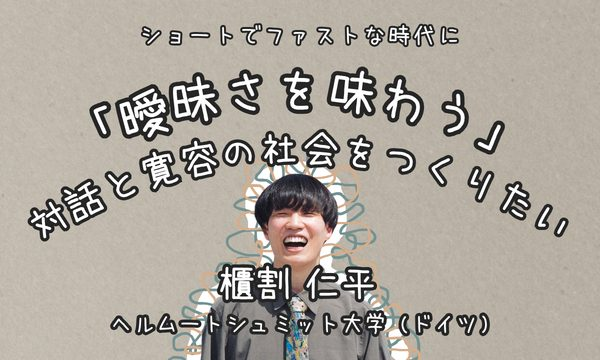
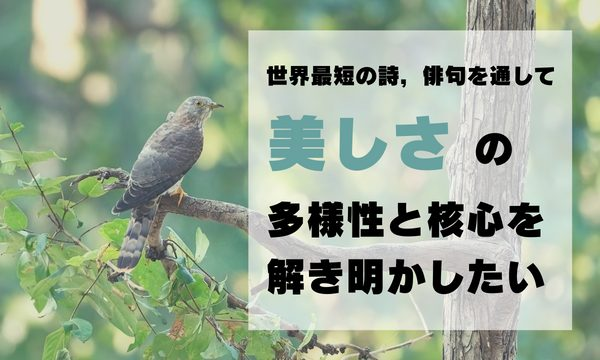

CROWDFUNDING
クラウドファンディング
学術系クラウドファンディング academist（アカデミスト）で，たくさんの方に研究を応援していただいています。いただいたご支援は，研究と，その成果を社会に届ける活動に使っています。
Many people support my research through academist, a crowdfunding platform for science. Their support goes to my research and to sharing its results with society.
NOW
募集中のプロジェクト

募集中Open now
「曖昧さを味わう」対話と寛容の社会をつくりたいSavoring ambiguity: Toward a society of dialogue and tolerance
2026.09.01 – 2026.10.29
目標金額は100万円です。期間内に目標に届いた場合にだけ，ご支援が確定する方式です。The goal is 1,000,000 JPY. Pledges are charged only if the goal is reached within the period.
プロジェクトを見る・支援するVIEW & SUPPORT
ARCHIVE
これまでのプロジェクト

終了Closed
世界最短の詩、俳句を通して、美しさの多様性と核心を解き明かしたいUncovering the diversity and core of beauty through haiku, the world's shortest poem
2022.09.08 – 2024.08.30
ファンクラブ形式のプロジェクトです。152名の方に応援していただきました。A fan-club project supported by 152 people.
プロジェクトを見るVIEW PROJECT